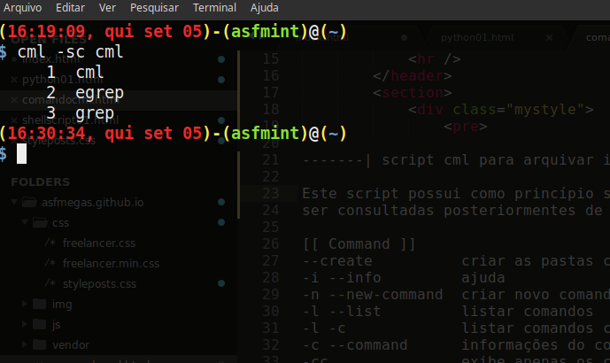
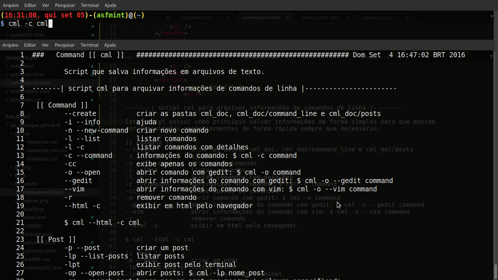
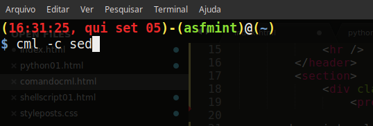
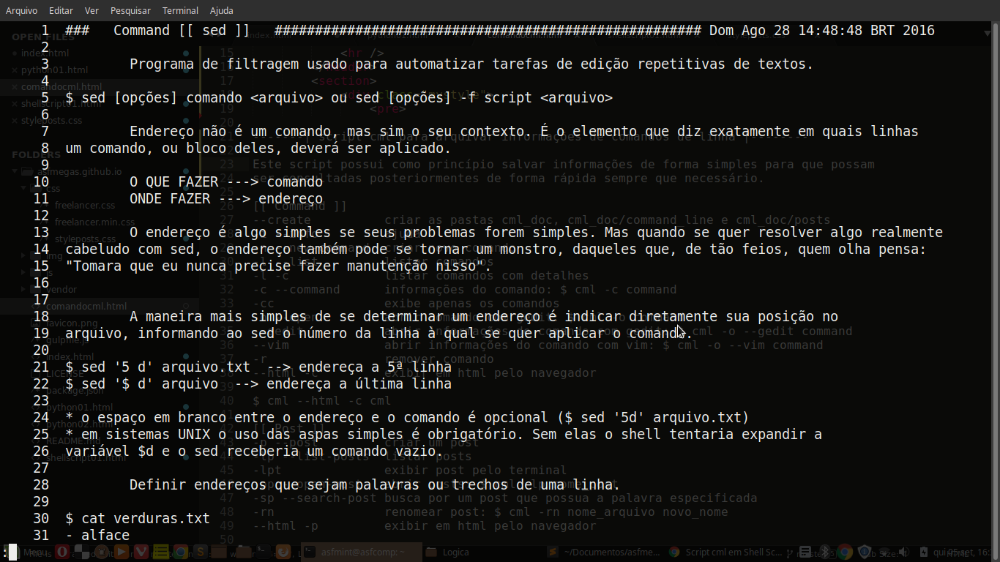
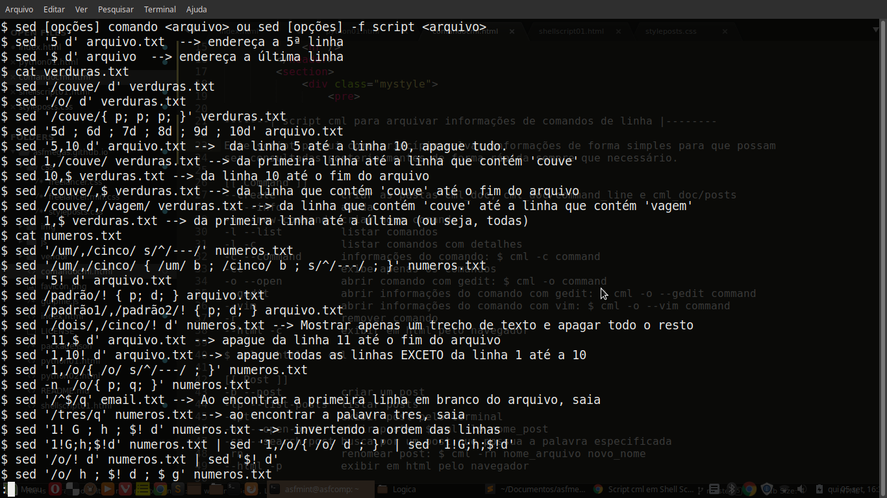

-------| script cml para arquivar informações de comandos de linha |-------- Este script possui como princípio salvar informações de forma simples para que possam ser consultadas posteriormentes de forma rápida sempre que necessário. [[ Command ]] --create criar as pastas cml_doc, cml_doc/command_line e cml_doc/posts -i --info ajuda -n --new-command criar novo comando -l --list listar comandos -l -c listar comandos com detalhes -c --command informações do comando: $ cml -c command -cc exibe apenas os comandos -o --open abrir comando com gedit: $ cml -o command --gedit abrir informações do comando com gedit: $ cml -o --gedit command --vim abrir informações do comando com vim: $ cml -o --vim command -r remover comando --html -c exibir em html pelo navegador $ cml --html -c cml [[ Post ]] -p --post criar um post -lp --list-posts listar posts -lpt exibir post pelo terminal -op --open-post abrir posts: $ cml -lp nome_post -sp --search-post busca por um post que possua a palavra especificada -rn renomear post: $ cml -rn nome_arquivo novo_nome --html -p exibir em html pelo navegador $ cml -r --post nome-post --> remove post [[ Search ]] cml [-s | --search] palavra --> pesquisa geral cml [-s | --search] [-c | --command] --> pesquisa apenas em comandos cml [-s | --serach] [-p | --post] --> pesquisa apenas em posts cml [-s | --search] [-s] --> busca um valor específico no título do arquivo cml [-s | --search] [-t | --tag] --> busca nas keywords dos arquivos [[ Alias ]] alias cmlic='cml -ic' alias cmld='cml --new-topic' alias cmlg='cml --open-gedit' alias cmli='cml --infor' alias cmll='cml --lista' alias cmln='cml -ln' alias cmlname='cml --lista -name' alias cmlnum='cml --lista -num' alias cmlo='cml --opcao' alias cmlp='cml --posts' alias cmlc='cml -c' alias cmlcc='cml -cc' alias cmlop='cml -op' Realiza pesquisa:  Exibi informações:  Exibir informações salvas do comando sed:   Comando: $ cml -cc sed: 
[[ Script cml ]] #!/bin/bash # Descrição: cml - Ajuda para comandos Linux (command-line) # Sinopse: cml [opções] [arquivo] # Ajuda: $ cml -i # Autor: Alexsandro Façanha commandNotFound(){ echo -e "\n\033[1;31;40m Command not found!\n" } getLista() { if [ -d $2 ]; then grep -R $1 $2* | cut -d'/' -f6 | cut -d':' -f1 | cut -d'.' -f1 | uniq | cat -n else echo -e "\n\033[1;31;40m Pasta não existe!\n Digite $ cml --create\n" fi } getListSpecific(){ if [ -d $2 ]; then ls $2 | egrep "$1" | uniq | cat -n else echo -e "\n\033[1;31;40m Pasta não existe!\n Digite $ cml --create\n" fi } getListKeywords(){ egrep -R "^keywords" $2 | grep $1 | cut -d'/' -f6 | sed 's/:/: /g' | sed 's/keywords://g' | cat -n } getListHTML() { arq=$1 if [ $3 == "Post" ]; then arq=$(echo "post_$arq") fi if [ -f $HOME/cml_doc/$2/$arq.txt ] ; then echo "<!doctype html>" > $HOME/pag_tmp.html echo "<html>" >> $HOME/pag_tmp.html echo "<head>" >> $HOME/pag_tmp.html echo "<meta charset='utf-8' />" >> $HOME/pag_tmp.html echo "<title>$3 $1</title>" >> $HOME/pag_tmp.html echo "<link rel='stylesheet' href='$HOME/mybin/style-cml.css'>" >> $HOME/pag_tmp.html echo "</head>" >> $HOME/pag_tmp.html echo "<body>" >> $HOME/pag_tmp.html echo "<div id='conteudo'>" >> $HOME/pag_tmp.html echo "<pre>" >> $HOME/pag_tmp.html while read linha; do echo "$linha" >> $HOME/pag_tmp.html done < $HOME/cml_doc/$2/$arq.txt echo "</pre>" >> $HOME/pag_tmp.html echo "</div>" >> $HOME/pag_tmp.html echo "</body>" >> $HOME/pag_tmp.html echo "</html>" >> $HOME/pag_tmp.html opera $HOME/pag_tmp.html --type=renderer &>/dev/null & echo "O aquivo foi criado com sucesso!" echo "Para acessá-lo, vá a $HOME/pag_tmp.html" exit 0 else if [ $3 == "Post" ]; then echo "Post não encontrado!!!!" else echo "Comando não encontrado!!!!" fi fi } if [ $# -eq 1 ] ; then case $1 in #Create folder --create) if ls $HOME/cml_doc &> /dev/null; then if ls $HOME/cml_doc/command_line &> /dev/null; then echo -e "\n Folders already created\n" else mkdir $HOME/cml_doc mkdir $HOME/cml_doc/command_line mkdir $HOME/cml_doc/posts fi else mkdir $HOME/cml_doc; mkdir $HOME/cml_doc/command_line fi ;; #Information -i | --info) cat $HOME/mybin/info-cml | less ;; #List commands -l | --list) ls $HOME/cml_doc/command_line | cut -d'.' -f1 | cat -n ;; -ll) ls $HOME/cml_doc/command_line | cut -d'.' -f1 | cat -n | less ;; #List posts -lp | --list-posts) ls $HOME/cml_doc/posts | cut -d'_' -f2 | cut -d'.' -f1 | cat -n ;; *) commandNotFound ;; esac elif [ $# -eq 2 ]; then case $1 in -c | --command) if [ -f $HOME/cml_doc/command_line/$2.txt ] ; then count=$(cat $HOME/cml_doc/command_line/$2.txt | wc -l) if [ $count -le 30 ]; then cat -n $HOME/cml_doc/command_line/$2.txt else cat -n $HOME/cml_doc/command_line/$2.txt | less fi else commandNotFound fi ;; -cc) if [ -f $HOME/cml_doc/command_line/$2.txt ] ; then count=$(cat $HOME/cml_doc/command_line/$2.txt | grep "^$ " | wc -l) if [ $count -le 30 ]; then cat $HOME/cml_doc/command_line/$2.txt | grep "^$ " else cat $HOME/cml_doc/command_line/$2.txt | grep "^$ " | less fi else echo -e "\n\033[0;37m The file \033[1;31;40m[[ $2 ]] \033[0;37mwas not found!" fi;; -n | --new-command) if ls $HOME/cml_doc/command_line/$2.txt &> /dev/null ; then echo -e "\n\033[1;37;00mO comando \033[1;31;40m[[ $2 ]] \033[1;37;00mjá está na lista.\n" else echo "### Command [[ $2 ]] ##################################################### $(date) " >> $HOME/cml_doc/command_line/$2.txt gedit $HOME/cml_doc/command_line/$2.txt & fi ;; -p | --post) if [ -f $HOME/cml_doc/posts/post_$2.txt ]; then echo "O arquivo $2 já existe." else echo "### Post [[ $2 ]] ############################### $(date) " > $HOME/cml_doc/posts/post_$2.txt gedit $HOME/cml_doc/posts/post_$2.txt & fi ;; -op | --open-post) arq=$(ls $HOME/cml_doc/posts/ | grep -i "$2") count=$(ls $HOME/cml_doc/posts/ | grep -i "$2" | wc -l) if [ $count -gt 1 ]; then echo -e " * Existem mais de um arquivo. Escolha qual abrir.\n" echo -e "$arq" | cat -n echo "" else if [ -f $HOME/cml_doc/posts/$arq ]; then gedit $HOME/cml_doc/posts/$arq & else echo -e "\n\tNenhum arquivo encontrado!\n" fi fi;; -o | --open-command) if [ -f $HOME/cml_doc/command_line/$2.txt ] ; then gedit $HOME/cml_doc/command_line/$2.txt & else commandNotFound fi ;; -r | --remove-comammd) if [ -f $HOME/cml_doc/command_line/$2.txt ] ; then rm $HOME/cml_doc/command_line/$2.txt echo -e "\n\033[00m Comando \033[1;31;40m [[ $2 ]] \033[00mapagado com sucesso!\n" else echo -e "\n\033[00m O comando\033[1;31;40m [[ $2 ]] \033[00mnão existe!\n" fi ;; -l) case $2 in -c) for com in `ls $HOME/cml_doc/command_line | cut -d'.' -f1` ; do echo $com: cat $HOME/cml_doc/command_line/$com.txt | sed '1,2d; q' done ;; *) commandNotFound ;; esac ;; -s | --search) if [ -d $HOME/cml_doc/ ]; then getLista $2 "$HOME/cml_doc/" else echo "Não existe uma lista." fi ;; -sc | --search-command) getLista $2 "$HOME/cml_doc/command_line/" ;; -sp | --search-post) getLista $2 "$HOME/cml_doc/posts/" ;; -lpt) files=$(ls $HOME/cml_doc/posts/ | grep -i "$2") if [ -z $files &> /dev/null ]; then echo -e "\nNenhum arquivo encontrado!\n" else for leia in $files; do cat $HOME/cml_doc/posts/$leia >> $HOME/cml_doc/posts/lista.tmp done count=$(cat $HOME/cml_doc/posts/lista.tmp | wc -l) if [ $count -gt 30 ]; then cat $HOME/cml_doc/posts/lista.tmp | less rm $HOME/cml_doc/posts/lista.tmp else cat $HOME/cml_doc/posts/lista.tmp rm $HOME/cml_doc/posts/lista.tmp fi fi ;; *) commandNotFound ;; esac elif [ $# -eq 3 ]; then case $1 in -o) case $2 in --gedit) if [ -f $HOME/cml_doc/command_line/$3.txt ] ; then gedit $HOME/cml_doc/command_line/$3.txt & else commandNotFound fi ;; --vim) if [ -f $HOME/cml_doc/command_line/$3.txt ] ; then vim $HOME/cml_doc/command_line/$3.txt else commandNotFound fi ;; *) commandNotFound ;; esac ;; -r) case $2 in --post) if [ -f $HOME/cml_doc/posts/post_$3.txt ] ; then rm $HOME/cml_doc/posts/post_$3.txt echo -e "\n Post $3 apagado com sucesse!\n" else echo -e "\n\033[1;37;00mO post\033[1;31;40m [[ $3 ]] \033[1;37;00mnão existe!\n" fi ;; *) commandNotFound;; esac ;; -s | --search) case $2 in -c | --command) grep -R $3 $HOME/cml_doc/command_line/* | cut -d'/' -f6 | cut -d':' -f1 | cut -d'.' -f1 | uniq | cat -n ;; -p | --post) grep -R $3 $HOME/cml_doc/posts/* | cut -d'/' -f6 | cut -d':' -f1 | cut -d'_' -f2 | cut -d'.' -f1 | uniq | cat -n ;; -s | --specific) getListSpecific $3 "$HOME/cml_doc/posts" ;; -t | --tag) getListKeywords $3 "$HOME/cml_doc" ;; *) commandNotFound;; esac ;; -rn) if [ -f $HOME/cml_doc/posts/post_$2.txt ] ; then cat $HOME/cml_doc/posts/post_$2.txt | sed '1d' > $HOME/cml_doc/posts/tmp.txt echo "### Command [[ $3 ]] ##################################################### $(date) " > $HOME/cml_doc/posts/post_$2.txt cat $HOME/cml_doc/posts/tmp.txt >> $HOME/cml_doc/posts/post_$2.txt rm $HOME/cml_doc/posts/tmp.txt mv $HOME/cml_doc/posts/post_$2.txt $HOME/cml_doc/posts/post_$3.txt else echo -e "\n\033[1;37;00mThe file\033[1;31;40m [[ $2 ]] \033[1;37;00mwas not found!\n" fi ;; --html) case $2 in -c) getListHTML $3 command_line "Comando" ;; -p) getListHTML $3 posts "Post" ;; *) commandNotFound ;; esac ;; *) commandNotFound ;; esac fi